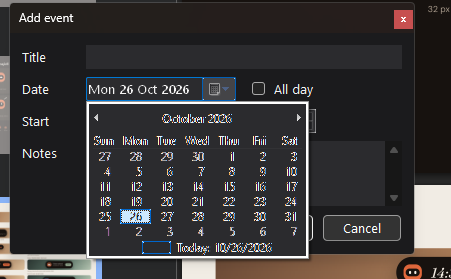

<!doctype html>
<html lang="id">
<head>
<meta charset="utf-8">
<meta name="viewport" content="width=device-width, initial-scale=1">
<title>Editor Acara Baru</title>
<link rel="preconnect" href="https://fonts.googleapis.com">
<link rel="preconnect" href="https://fonts.gstatic.com" crossorigin>
<link href="https://fonts.googleapis.com/css2?family=Fraunces:ital,opsz,wght@0,9..144,400;0,9..144,500;1,9..144,400;1,9..144,500&family=DM+Sans:opsz,wght@9..40,400;9..40,500;9..40,600&display=swap" rel="stylesheet">
<style>
  :root {
    --paper: #F1ECE4; --ink: #221A14; --ink2: #7A6B5D; --rule: #DDD3C6;
    --a: #E2683C; --sage: #9DB59A; --ochre: #D9A441;
    --disp: 'Fraunces', serif; --body: 'DM Sans', sans-serif;
  }
  .wd { --bg: #1E1814; --card: #272019; --pop: #2A221C; --tx: #F4EDE4; --tx2: #A89A8B; --tx3: #6E6155; --ac: #E2683C; --ai: #17120F;
        --b: rgba(244,237,228,.09); --field: #2C241D; --hov: #33291F; --sel: rgba(226,104,60,.16); }
  .wl { --bg: #F4EEE6; --card: #FFFBF5; --pop: #FFFBF5; --tx: #221A14; --tx2: #7A6B5D; --tx3: #A89A8B; --ac: #C9542B; --ai: #FFFBF5;
        --b: rgba(34,26,20,.10); --field: #FFFFFF; --hov: #EFE6DA; --sel: rgba(201,84,43,.12); }
  @page { size: 297mm 210mm; margin: 0; }
  * { box-sizing: border-box; margin: 0; padding: 0; }
  html, body { background: #9a948c; }
  body { font-family: var(--body); color: var(--ink); -webkit-print-color-adjust: exact; print-color-adjust: exact; }
  .page { width: 297mm; height: 210mm; overflow: hidden; position: relative; margin: 0 auto 16px; padding: 30px 40px; background: var(--paper); break-after: page; }
  @media print { html, body { background: none; } .page { margin: 0; } }
  svg { display: block; }
  .folio { position: absolute; left: 40px; right: 40px; bottom: 16px; display: flex; justify-content: space-between; font-size: 9.5px; letter-spacing: .1em; text-transform: uppercase; opacity: .5; }
  .eyebrow { font-size: 10.5px; letter-spacing: .14em; text-transform: uppercase; font-weight: 600; color: var(--ink2); }
  h1 { font-family: var(--disp); font-style: italic; font-weight: 500; font-size: 30px; letter-spacing: -.01em; margin: 2px 0 16px; }
  .lbl { font-size: 10.5px; letter-spacing: .1em; text-transform: uppercase; font-weight: 600; color: var(--ink2); margin-bottom: 8px; }
  .ux li { list-style: none; position: relative; padding-left: 14px; font-size: 11.5px; line-height: 1.5; margin-bottom: 5px; color: #3E3229; }
  .ux li::before { content: ""; position: absolute; left: 0; top: 7px; width: 5px; height: 5px; border-radius: 50%; background: var(--a); }
  .ux h3 { font-family: var(--disp); font-style: italic; font-weight: 500; font-size: 18px; margin-bottom: 8px; }

  /* why page */
  .why { display: grid; grid-template-columns: 560px 1fr; gap: 30px; }
  .shot { position: relative; width: 560px; }
  .shot img { width: 560px; display: block; border-radius: 10px; box-shadow: 0 10px 26px rgba(34,26,20,.2); }
  .pin { position: absolute; width: 22px; height: 22px; border-radius: 50%; background: var(--a); color: #fff; font-size: 11px; font-weight: 600;
         display: flex; align-items: center; justify-content: center; box-shadow: 0 0 0 3px rgba(255,255,255,.85); }
  .cause { display: grid; grid-template-columns: 26px 1fr; gap: 10px; padding: 9px 0; border-bottom: 1px solid var(--rule); }
  .cause .n { width: 22px; height: 22px; border-radius: 50%; background: var(--a); color: #fff; font-size: 11px; font-weight: 600; display: flex; align-items: center; justify-content: center; }
  .cause b { font-size: 12.5px; display: block; margin-bottom: 2px; }
  .cause p { font-size: 11.5px; line-height: 1.5; color: #4A3D33; }
  .root { margin-top: 18px; background: #17120F; color: #F4EDE4; border-radius: 16px; padding: 16px 18px; }
  .root .rh { font-family: var(--disp); font-style: italic; font-weight: 500; font-size: 18px; display: block; margin-bottom: 6px; }
  .root p { font-size: 11.5px; line-height: 1.55; color: #D8CDBF; }
  code { font-family: 'Cascadia Mono', Consolas, monospace; font-size: 10.5px; background: rgba(0,0,0,.07); padding: 0 4px; border-radius: 4px; }
  .root code { background: rgba(244,237,228,.1); }

  /* editor */
  .ed { width: 400px; background: var(--bg); color: var(--tx); border-radius: 16px; border: 1px solid var(--b); box-shadow: 0 18px 40px rgba(34,26,20,.28); position: relative; font-size: 12px; }
  .ed .hd { display: flex; align-items: center; justify-content: space-between; padding: 16px 18px 6px; }
  .ed .hd b { font-family: var(--disp); font-style: italic; font-weight: 500; font-size: 21px; }
  .xbtn { width: 26px; height: 26px; border-radius: 50%; display: flex; align-items: center; justify-content: center; color: var(--tx2); background: var(--hov); }
  .xbtn svg { width: 12px; height: 12px; }
  .bd { padding: 6px 18px 16px; display: flex; flex-direction: column; gap: 12px; }
  .title { font-size: 17px; font-weight: 500; padding: 8px 0 10px; border-bottom: 1.5px solid var(--b); }
  .title.ph { color: var(--tx3); font-weight: 400; }
  .title.focus { border-color: var(--ac); }
  .r { display: flex; align-items: center; gap: 8px; }
  .ic { width: 18px; color: var(--tx2); flex: none; }
  .ic svg { width: 17px; height: 17px; }
  .chip { display: inline-flex; align-items: center; gap: 6px; background: var(--field); border: 1px solid var(--b); border-radius: 10px; padding: 7px 11px; font-size: 12px; white-space: nowrap; font-variant-numeric: tabular-nums; }
  .chip.on { border-color: var(--ac); box-shadow: 0 0 0 3px var(--sel); }
  .chip svg { width: 11px; height: 11px; color: var(--tx2); }
  .muted { color: var(--tx2); font-size: 11px; }
  .quick { display: flex; gap: 6px; margin-left: 26px; }
  .quick span { font-size: 10.5px; padding: 4px 10px; border-radius: 99px; border: 1px solid var(--b); color: var(--tx2); }
  .quick span.on { background: var(--sel); color: var(--ac); border-color: transparent; }
  .tog { width: 32px; height: 18px; border-radius: 99px; background: transparent; border: 1.5px solid var(--tx2); position: relative; flex: none; }
  .tog::after { content: ""; position: absolute; left: 2px; top: 1.5px; width: 12px; height: 12px; border-radius: 50%; background: var(--tx2); }
  .tog.on { background: var(--ac); border-color: var(--ac); }
  .tog.on::after { left: auto; right: 2px; background: var(--ai); }
  .notes { background: var(--field); border: 1px solid var(--b); border-radius: 12px; padding: 9px 11px; height: 62px; color: var(--tx3); font-size: 11.5px; }
  .ft { display: flex; align-items: center; gap: 8px; padding: 12px 18px 16px; border-top: 1px solid var(--b); }
  .ft .who { font-size: 10.5px; color: var(--tx2); display: flex; align-items: center; gap: 6px; flex: 1; }
  .ft .who i { width: 8px; height: 8px; border-radius: 50%; background: var(--sage); display: block; }
  .btn { font-size: 11.5px; padding: 7px 14px; border-radius: 99px; background: var(--hov); color: var(--tx); }
  .btn.pri { background: var(--ac); color: var(--ai); font-weight: 500; }
  .btn.dis { opacity: .4; }
  .err { font-size: 10.5px; color: #FF8A73; margin: -6px 0 0 26px; }
  .wl .err { color: #C42B1C; }

  /* popovers */
  .pop { position: absolute; background: var(--pop); border: 1px solid var(--b); border-radius: 16px; box-shadow: 0 16px 36px rgba(0,0,0,.35); z-index: 3; color: var(--tx); }
  .cal { width: 268px; padding: 12px 12px 10px; }
  .cal .ch { display: flex; align-items: center; justify-content: space-between; margin: 0 2px 8px; }
  .cal .ch b { font-family: var(--disp); font-style: italic; font-weight: 500; font-size: 16px; }
  .cal .ch span { display: flex; gap: 2px; color: var(--tx2); }
  .cal .ch svg { width: 16px; height: 16px; }
  .g7 { display: grid; grid-template-columns: repeat(7, 1fr); text-align: center; row-gap: 2px; }
  .g7 .w { font-size: 9.5px; color: var(--tx2); padding-bottom: 4px; }
  .g7 .d { height: 32px; display: flex; align-items: center; justify-content: center; font-size: 11.5px; position: relative; font-variant-numeric: tabular-nums; }
  .g7 .d span { width: 30px; height: 30px; border-radius: 50%; display: flex; align-items: center; justify-content: center; }
  .g7 .d.o { color: var(--tx3); }
  .g7 .d.today span { box-shadow: inset 0 0 0 1.5px var(--ac); color: var(--ac); font-weight: 600; }
  .g7 .d.sel span { background: var(--ac); color: var(--ai); font-weight: 600; }
  .g7 .d.hov span { background: var(--hov); }
  .g7 .d em { position: absolute; bottom: 2px; width: 3.5px; height: 3.5px; border-radius: 50%; background: var(--sage); }
  .cal .cf { display: flex; justify-content: space-between; align-items: center; border-top: 1px solid var(--b); margin-top: 6px; padding: 8px 4px 0; font-size: 11px; }
  .cal .cf span:first-child { color: var(--ac); font-weight: 500; }
  .times { width: 186px; padding: 6px; max-height: 236px; overflow: hidden; }
  .times div { display: flex; justify-content: space-between; padding: 7px 10px; border-radius: 9px; font-size: 12px; font-variant-numeric: tabular-nums; }
  .times div small { color: var(--tx2); font-size: 10.5px; }
  .times div.on { background: var(--sel); color: var(--ac); font-weight: 500; }
  .times div.on small { color: var(--ac); }
  .times div.hov { background: var(--hov); }

  .three { display: grid; grid-template-columns: repeat(3, 1fr); gap: 20px; margin-top: 18px; }
  .three .ed { width: 100%; }
  .cmp { display: grid; grid-template-columns: 1fr 1fr; gap: 0; border: 1px solid var(--rule); border-radius: 14px; overflow: hidden; margin-top: 8px; }
  .cmp div { padding: 9px 12px; font-size: 11px; border-bottom: 1px solid var(--rule); line-height: 1.4; }
  .cmp div:nth-child(odd) { background: #F8F4EE; color: #6B5D51; }
  .cmp div:nth-child(even) { background: #FFFBF5; }
  .cmp .h { font-size: 9.5px; letter-spacing: .1em; text-transform: uppercase; font-weight: 600; }
</style>
</head>
<body>
<div id="doc"></div>
<script>
const I = {
  cal: '<svg viewBox="0 0 24 24" fill="none" stroke="currentColor" stroke-width="1.5" stroke-linecap="round" stroke-linejoin="round"><rect x="3" y="5" width="18" height="16" rx="3"/><path d="M3 10h18M8 3v4M16 3v4"/></svg>',
  clock: '<svg viewBox="0 0 24 24" fill="none" stroke="currentColor" stroke-width="1.5" stroke-linecap="round" stroke-linejoin="round"><circle cx="12" cy="12" r="9"/><path d="M12 7.5V12l3 2"/></svg>',
  note: '<svg viewBox="0 0 24 24" fill="none" stroke="currentColor" stroke-width="1.5" stroke-linecap="round" stroke-linejoin="round"><path d="M5 3.5h10l4 4V20.5H5z"/><path d="M15 3.5v4h4M8 12h8M8 16h5"/></svg>',
  sun: '<svg viewBox="0 0 24 24" fill="none" stroke="currentColor" stroke-width="1.5" stroke-linecap="round"><circle cx="12" cy="12" r="4"/><path d="M12 3v2M12 19v2M3 12h2M19 12h2M5.6 5.6l1.4 1.4M17 17l1.4 1.4M5.6 18.4L7 17M17 7l1.4-1.4"/></svg>',
  down: '<svg viewBox="0 0 24 24" fill="none" stroke="currentColor" stroke-width="2" stroke-linecap="round" stroke-linejoin="round"><path d="M6 9l6 6 6-6"/></svg>',
  x: '<svg viewBox="0 0 24 24" fill="none" stroke="currentColor" stroke-width="2" stroke-linecap="round"><path d="M6 6l12 12M18 6L6 18"/></svg>',
  l: '<svg viewBox="0 0 24 24" fill="none" stroke="currentColor" stroke-width="1.6" stroke-linecap="round" stroke-linejoin="round"><path d="M14.5 6l-6 6 6 6"/></svg>',
  r: '<svg viewBox="0 0 24 24" fill="none" stroke="currentColor" stroke-width="1.6" stroke-linecap="round" stroke-linejoin="round"><path d="M9.5 6l6 6-6 6"/></svg>',
};

function calPop(top, left) {
  const cells = [[28,1],[29,1],[30,1]];
  for (let n = 1; n <= 31; n++) cells.push([n, 0]);
  cells.push([1, 1]);
  const ev = new Set([2, 9, 14, 21, 25, 27, 28]);
  return `<div class="pop cal" style="top:${top}px;left:${left}px">
    <div class="ch"><b>Oktober 2026</b><span>${I.l}${I.r}</span></div>
    <div class="g7">${['Sen','Sel','Rab','Kam','Jum','Sab','Min'].map(w => `<div class="w">${w}</div>`).join('')}
    ${cells.map(([n, o]) => `<div class="d${o ? ' o' : ''}${!o && n === 26 ? ' today' : ''}${!o && n === 28 ? ' sel' : ''}${!o && n === 22 ? ' hov' : ''}"><span>${n}</span>${!o && ev.has(n) && n !== 28 ? '<em></em>' : ''}</div>`).join('')}</div>
    <div class="cf"><span>Hari ini</span><span style="color:var(--tx2)">Rab, 28 Okt dipilih</span></div></div>`;
}

function timePop(top, left) {
  const t = [['10:00',''],['10:15','15 mnt'],['10:30','30 mnt'],['10:45','45 mnt'],['11:00','1 j'],['11:30','1 j 30 mnt'],['12:00','2 j'],['12:30','2 j 30 mnt']];
  return `<div class="pop times" style="top:${top}px;left:${left}px">${t.map(([h, d]) => `<div class="${h === '11:30' ? 'on' : h === '11:00' ? 'hov' : ''}"><span>${h}</span><small>${d}</small></div>`).join('')}</div>`;
}

function editor(theme, o = {}) {
  const dateOn = o.pop === 'date', timeOn = o.pop === 'time';
  const allDay = !!o.allDay;
  return `<div class="ed ${theme}" style="${o.style || ''}">
    <div class="hd"><b>${o.heading || 'Acara baru'}</b><span class="xbtn">${I.x}</span></div>
    <div class="bd">
      <div class="title${o.empty ? ' ph' : ''}${o.focusTitle ? ' focus' : ''}">${o.empty ? 'Judul acara' : 'Review desain klien'}</div>
      <div class="r"><span class="ic">${I.cal}</span><span class="chip${dateOn ? ' on' : ''}">${o.date || 'Rab, 28 Okt 2026'} ${I.down}</span>
        <span style="flex:1"></span><span class="muted">Sepanjang hari</span><span class="tog${allDay ? ' on' : ''}"></span></div>
      <div class="quick"><span>Hari ini</span><span>Besok</span><span class="${o.quick ? 'on' : ''}">Rab</span><span>Minggu depan</span></div>
      ${allDay ? '' : `<div class="r"><span class="ic">${I.clock}</span><span class="chip">10:00</span><span class="muted">→</span><span class="chip${timeOn ? ' on' : ''}${o.bad ? '" style="border-color:#E2683C' : ''}">${o.end || '11:30'}</span><span class="muted" style="margin-left:4px">${o.bad ? '' : '1 j 30 mnt'}</span></div>`}
      ${o.bad ? '<div class="err">Jam selesai harus setelah jam mulai.</div>' : ''}
      <div class="r" style="align-items:flex-start"><span class="ic" style="margin-top:9px">${I.note}</span><div class="notes" style="flex:1">${o.notes || 'Catatan (opsional)'}</div></div>
    </div>
    <div class="ft"><span class="who"><i></i>Google Calendar · rani@studio.id</span><span class="btn">Batal</span><span class="btn pri${o.empty || o.bad ? ' dis' : ''}">Simpan</span></div>
    ${dateOn ? calPop(118, 46) : ''}${timeOn ? timePop(196, 132) : ''}</div>`;
}

const folio = (r) => `<div class="folio"><span>Dynamic Island · Studio · Editor acara</span><span>${r}</span></div>`;

const why = `<section class="page"><div class="eyebrow">Kenapa jelek</div><h1>Editor acara sekarang</h1>
  <div class="why"><div>
    <div class="shot">
      <span class="pin" style="left:300px;top:205px">1</span>
      <span class="pin" style="left:150px;top:136px">2</span>
      <span class="pin" style="left:318px;top:296px">3</span>
      <span class="pin" style="left:520px;top:10px">4</span>
      <span class="pin" style="left:16px;top:212px">5</span></div>
    <div class="root"><span class="rh">Akar masalahnya</span>
      <p>Island digambar sendiri dengan Direct2D, tapi editor memakai kontrol bawaan Win32 lama: <code>EDIT</code>, <code>BUTTON</code>, <code>SysDateTimePick32</code> dan kalender <code>MonthCal</code>. Kontrol tanggal itu tidak punya mode gelap, jadi <code>paint_themed</code> di <code>src/ui/editor.rs</code> menggambarnya terang lalu <b>membalik warnanya piksel per piksel</b>. Hasilnya tidak akan pernah rapi.</p></div>
  </div><div>
    <div class="cause"><span class="n">1</span><div><b>Teks pelangi</b><p>Pinggiran huruf yang berwarna (ClearType) tidak ikut dibalik, karena fungsi <code>tone</code> sengaja membiarkan piksel berwarna. Jadilah angka bergaris ungu-hijau.</p></div></div>
    <div class="cause"><span class="n">2</span><div><b>Kalender gaya Windows lama</b><p>Kotak tajam, garis putih, kotak fokus biru putus-putus. Bentuknya dari kontrol <code>MonthCal</code>, bukan desain island.</p></div></div>
    <div class="cause"><span class="n">3</span><div><b>Format campur aduk</b><p>"Mon 26 Oct 2026" di atas, "Today: 10/26/2026" (format Amerika) di bawah. Bagian bawah kalender mengikuti Windows, bukan bahasa app.</p></div></div>
    <div class="cause"><span class="n">4</span><div><b>Bingkai jendela standar</b><p>Judul jendela dan tombol tutup merah dari Windows; tidak nyambung dengan panel island.</p></div></div>
    <div class="cause" style="border:0"><span class="n">5</span><div><b>Tata letak sempit</b><p>Label di kiri, kotak polos tanpa jarak, kalender menutupi kolom Start dan Notes.</p></div></div>
  </div></div>${folio('Masalah')}</section>`;

const fix = `<section class="page"><div class="eyebrow">Usulan · mode gelap</div><h1>Pilih tanggal dan jam tanpa kontrol Windows</h1>
  <div style="display:flex;gap:30px;align-items:flex-start">
    <div><div class="lbl">1 · Memilih tanggal</div>${editor('wd', { pop: 'date', quick: true, notes: 'Bawa maket skala 1:100' })}</div>
    <div><div class="lbl">2 · Memilih jam selesai</div>${editor('wd', { pop: 'time', notes: 'Bawa maket skala 1:100' })}</div>
  </div>
  <div style="position:absolute;left:910px;top:96px;width:180px" class="ux"><h3>Yang berubah</h3><ul>
    <li>Satu kartu tanpa bingkai Windows, sudut 16 px.</li>
    <li>Judul jadi baris besar di atas; field lain pakai ikon, bukan label.</li>
    <li>Tanggal & jam berupa chip; klik membuka popover yang digambar island sendiri.</li>
    <li>Kalender sama dengan panel: Sen–Min, titik acara, hari ini bercincin.</li>
    <li>Pintasan: Hari ini, Besok, nama hari, Minggu depan.</li>
    <li>Daftar jam per 15 menit dengan durasi, seperti Google Calendar.</li>
    <li>Akun tujuan terlihat di kiri bawah.</li></ul></div>
  ${folio('Usulan')}</section>`;

const states = `<section class="page"><div class="eyebrow">Usulan · status lain</div><h1>Terang, kosong, dan salah isi</h1>
  <div class="three">
    <div><div class="lbl">Mode terang</div>${editor('wl', { notes: 'Bawa maket skala 1:100' })}</div>
    <div><div class="lbl">Baru dibuka</div>${editor('wd', { empty: true, focusTitle: true, date: 'Sen, 26 Okt 2026' })}</div>
    <div><div class="lbl">Jam tidak valid</div>${editor('wd', { bad: true, end: '09:30' })}</div>
  </div>
  <div style="display:grid;grid-template-columns:repeat(3,1fr);gap:20px;margin-top:16px">
    <div class="ux"><ul><li>Mengikuti Mode jendela di Pengaturan.</li><li>Aksen terang memakai terakota lebih tua (#C9542B) agar kontras.</li></ul></div>
    <div class="ux"><ul><li>Kursor langsung di judul; tanggal = hari yang diklik di panel.</li><li>Simpan redup sampai judul diisi.</li></ul></div>
    <div class="ux"><ul><li>Chip yang salah bergaris terakota, pesan satu baris di bawahnya.</li><li>Sepanjang hari menyembunyikan baris jam.</li></ul></div>
  </div>${folio('Status')}</section>`;

const how = `<section class="page"><div class="eyebrow">Cara memperbaikinya di kode</div><h1>Gambar sendiri, seperti island</h1>
  <div style="display:grid;grid-template-columns:1fr 1fr;gap:30px">
    <div><div class="lbl">Sekarang vs usulan</div>
      <div class="cmp">
        <div class="h">Sekarang</div><div class="h">Usulan</div>
        <div>Jendela dialog Windows dengan judul & tombol tutup sistem</div><div>Jendela tanpa bingkai (DWM, sudut bulat Win11), header digambar sendiri</div>
        <div><code>SysDateTimePick32</code> + <code>MonthCal</code>, warna dibalik piksel</div><div>Chip + popover kalender Direct2D, memakai ulang gambar kalender panel</div>
        <div>Spin jam bawaan Windows</div><div>Popover daftar jam per 15 menit, bisa diketik</div>
        <div>Format tanggal dari Windows (bisa "10/26/2026")</div><div>Format dari i18n app: "Rab, 28 Okt 2026" / "Wed, 28 Oct 2026"</div>
        <div>Checkbox "All day"</div><div>Toggle yang sama dengan Pengaturan</div>
        <div style="border:0">Kotak <code>EDIT</code> polos</div><div style="border:0">Tetap <code>EDIT</code> (supaya IME, copy-paste, undo jalan), tapi tanpa border dan diberi warna token</div>
      </div></div>
    <div class="ux"><h3>Rencana singkat</h3><ul>
      <li>Hapus <code>DATETIMEPICK_CLASSW</code>, <code>paint_themed</code> dan <code>tone</code> dari <code>editor.rs</code>; pembalikan warna tidak dibutuhkan lagi.</li>
      <li>Tambah popover kecil (jendela layered tanpa bingkai) untuk kalender dan daftar jam, digambar dengan Direct2D seperti panel.</li>
      <li>Ambil gambar grid bulan dari halaman Kalender supaya keduanya identik.</li>
      <li>Keyboard tetap jalan: Tab antar field, panah di kalender, Enter memilih, Esc menutup popover.</li>
      <li>Berlaku juga untuk editor Pengingat (tanggal & jam) agar konsisten.</li>
      <li>Kerjanya lewat workflow <b>build</b> sesuai AGENTS.md, setelah visual ini disetujui.</li></ul></div>
  </div>${folio('Perbaikan')}</section>`;

document.getElementById('doc').innerHTML = why + fix + states + how;

const only = /^#p(\d+)$/.exec(location.hash);
if (only) {
  document.querySelectorAll('.page').forEach((p, i) => { if (i + 1 !== +only[1]) p.remove(); else p.style.margin = '0'; });
  document.body.style.background = 'none';
}
</script>
</body>
</html>
